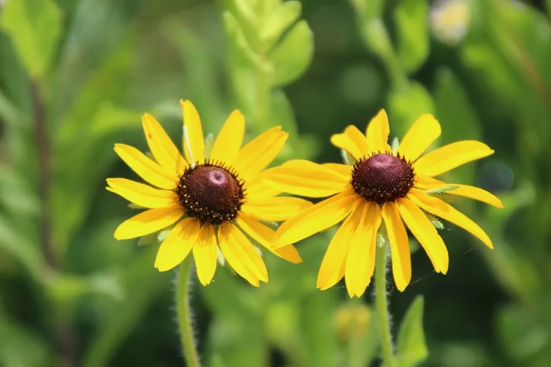

花卉与草本 · 植物界
黑心菊 Rudbeckia hirta

菊科一二年生草本，金黄色舌状花围绕深色隆起花心，色彩对比强烈，是花坛与花境的夏秋花卉，原产北美。
- 分类
- 门被子植物门纲木兰纲目菊目科菊科属金光菊属
- 栖息环境
- 北美草原、路旁与开阔地，喜光、耐旱
- 地理分布
- 原产北美洲，中国各地花坛引种栽培
- 保护级别
- 暂无评估
物种志
黑心菊为菊科金光菊属一二年生草本，株高 30–90 厘米，茎直立，全株被粗毛。叶片卵形至长椭圆形，互生。头状花序单生或数个聚生，直径 5–10 厘米，舌状花金黄色至橙黄色，中央管状花黑褐色、隆起呈锥状，花期 6–10 月；果实为瘦果。
黑心菊原产北美洲的草原与路旁，喜阳光充足、温暖和排水良好的环境，耐旱耐寒，适应性强。它金黄色舌状花与黑褐色花心形成强烈对比，因此得名，是花坛、花境和路旁绿化的常用花卉，也常作切花。栽培以播种为主，能自播繁衍；花后剪去残花可促进再次开花，是夏秋季节管理粗放的开花植物。
形态与习性
- 株高30–90 厘米，全株被粗毛
- 花期6–10 月
- 果期花后结瘦果
- 光照喜充足阳光
- 水分耐旱，忌积水
- 土壤疏松、排水良好的壤土
- 繁殖以播种为主，能自播
- 主要用途花坛、花境、切花
趣味知识
- 黑心菊金黄色舌状花围绕黑褐色隆起花心，因此得名。
- 它原产北美草原，耐旱耐寒，适应性强。
- 黑心菊能自播繁衍，花后剪去残花可促进再次开花。
- 色彩对比强烈，是花坛和路旁绿化的常用材料。